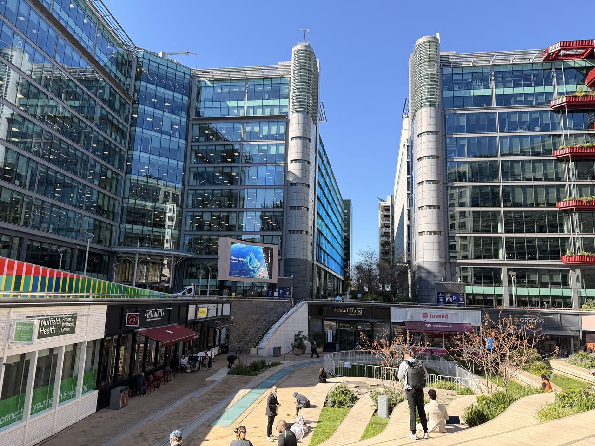
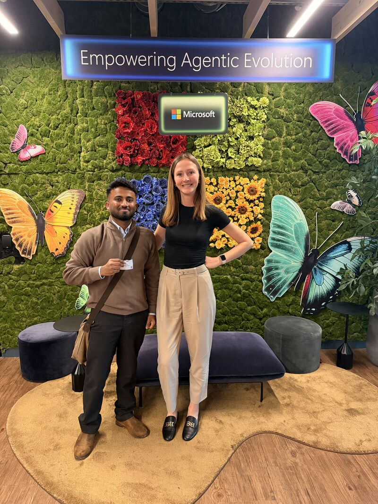
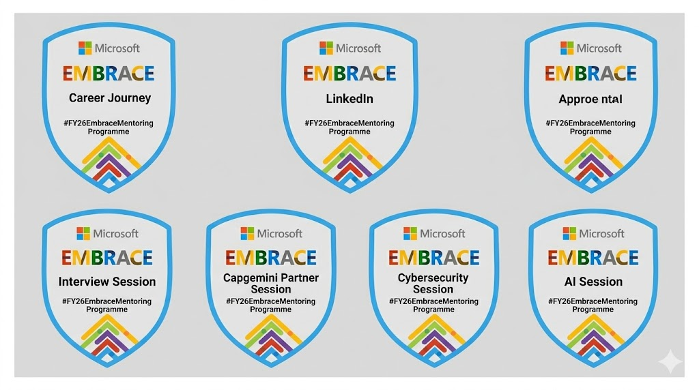

Your environment determines your growth, and recently, I had the privilege of stepping into one of the most innovative environments in the world. As part of the FY26 Microsoft Embrace Mentoring Programme, I’ve moved from participating in digital workshops to experiencing the vibrant heart of the tech industry firsthand. Exploring the physical spaces where global technical solutions are architected has fundamentally shifted my perspective on what it means to build impactful software. The sheer scale of the operations, combined with a workforce dedicated to pushing the boundaries of what is possible, made the entire experience nothing short of transformative. It was a tangible reminder of why I decided to pursue a career sitting at the intersection of data analytics and cybersecurity.
Stepping Into Innovation: The In-Person Advantage

There is an undeniable, specific energy you feel the moment you walk into the Microsoft headquarters. It is a dynamic culture that actively breathes innovation and thrives on seamless cross-team collaboration. Every interaction and every space within the campus feels methodically designed to foster creativity and technical excellence. For me, the absolute highlight of the entire visit was finally meeting my Microsoft mentor, Nathalie Maslen, in person. Until this point, our interactions had been highly productive but exclusively digital.
Transitioning from a screen to a face-to-face dialogue brought an incredible new dimension to her mentorship. Our conversation wasn't strictly confined to technical skills or engineering hurdles; rather, it was deeply centered around building professional confidence and mapping out long-term career strategy. Nathalie's guidance gave me a massive, immeasurable boost. She provided actionable insights on how to navigate the complex corporate tech landscape, thoroughly reinforcing my belief that with the right growth mindset and a strong support system, dedicated mentorship can erase perceived limits and dramatically accelerate a young professional's career trajectory.
"The energy, the environment, and the culture of innovation were truly inspiring to witness firsthand."
A Strategic Foundation

Before arriving at the campus, the program’s meticulously planned early phases focused heavily on rigorous virtual insight sessions. These workshops were specifically engineered to sharpen my immediate professional toolkit, ensuring I was prepared to step into the industry with confidence and purpose.
- LinkedIn Mastery & Digital Presence: We focused on deeply polishing my digital footprint to ensure I could effectively network on a global stage, highlighting my specific competencies in data analysis and cybersecurity to attract the right opportunities.
- Interview Strategy & Execution: We spent valuable time learning how to articulate technical and analytical value effectively within the tech sector's famously competitive interview formats, practicing scenarios that test both hard skills and cultural fit.
This strategic foundation was absolutely crucial. It gave me the vocabulary and the framework necessary to maximize the value of the subsequent technical deep dives.
The Technical Deep Dive
.jpg)
Building directly upon the solid foundation formed during our strategy sessions, the final and most intensive phase of the program pushed me significantly from a technical standpoint. I am thrilled to formally announce that I have successfully completed the highly specialized, intensive sessions covering two of the tech industry's most critical and rapidly evolving fields:
- Applied Artificial Intelligence: We took a deep dive into understanding exactly how AI is being applied practically by Microsoft and its vast network of global partners to solve remarkably complex, modern business problems at a true enterprise scale.
- Advanced Cybersecurity: We focused heavily on mastering the core concepts and modern architectural patterns that are fundamentally necessary for securing today's unpredictable and constantly expanding digital landscape against advanced persistent threats.
Through this comprehensive mentoring journey, the takeaways have been massive. I have gained a much deeper, practical understanding of modern industry best practices. My professional toolkit has been significantly sharpened and explicitly tailored for the high-standards of the enterprise tech space. Most importantly, I have acquired the critical foundational skills required to conceptualize, build, and eventually drive measurable impact in both AI integrations and secure systems architectures.
A Heartfelt Thank You
This journey wouldn't be possible without a massive support system. I want to extend my deepest gratitude to the program sponsors at Microsoft, Amber Joyce and Jeramie Sutton, and the entire dedicated program team. A special thank you to EDI and Dr. Frances Trought (DUniv) for championing this initiative and opening doors for the next generation of tech talent. Programs like Microsoft Embrace do more than teach; they empower and prepare future leaders. I’m incredibly grateful for the confidence boost and the knowledge I have gained.